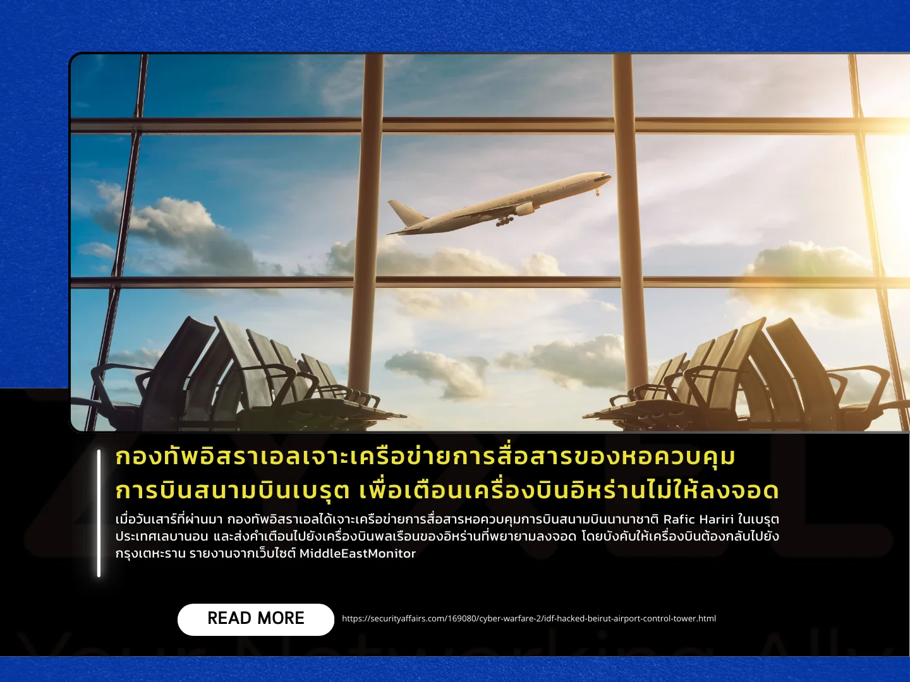

เผยแพร่เมื่อ: 1 ตุลาคม 2567
เมื่อวันเสาร์ที่ผ่านมา กองทัพอิสราเอลได้เจาะเครือข่ายการสื่อสารหอควบคุมการบินสนามบินนานาชาติ Rafic Hariri
ในเบรุต ประเทศเลบานอน และส่งคำเตือนไปยังเครื่องบินพลเรือนของอิหร่านที่พยายามลงจอด
โดยบังคับให้เครื่องบินต้องกลับไปยังกรุงเตหะราน รายงานจากเว็บไซต์ MiddleEastMonitor
โดยกระทรวงคมนาคมของเลบานอนได้สั่งให้เจ้าหน้าที่สนามบินไม่ให้เครื่องบินอิหร่านบินเข้าสู่น่านฟ้าเลบานอน
หลังจากที่มีการเจาะระบบของอิสราเอล
ซึ่งการตัดสินใจนี้เป็นไปตามคำเตือนของกองทัพอิสราเอลในการป้องกันการขนส่งอาวุธให้กับกลุ่ม Hezbollah
ผ่านทางสนามบินเบรุต
Daniel Hagari โฆษกกองทัพอิสราเอลกล่าวในแถลงการณ์ว่า “เราจะไม่ยอมให้มีการขนส่งอาวุธไปยังกลุ่ม Hezbollah
ในรูปแบบใด ๆ เรารู้ถึงการขนส่งอาวุธจากอิหร่านไปยัง Hezbollah และเราจะดำเนินการขัดขวาง” นอกจากนี้ยังเสริมว่า
“สนามบินแห่งนี้เป็นสนามบินพลเรือนเพื่อการใช้งานของพลเรือน และต้องคงสภาพเช่นนั้นต่อไป” ด้าน Ali Hamieh
รัฐมนตรีกระทรวงคมนาคมของเลบานอนยืนยันกับหนังสือพิมพ์ “An-Nahar”
ว่ากองทัพอิสราเอลได้เจาะเข้าสู่ระบบการสื่อสารของหอควบคุมการบินของสนามบิน
พร้อมทั้งข่มขู่ว่าจะโจมตีโครงสร้างพื้นฐานหากเครื่องบินอิหร่านลงจอด
ทั้งนี้ กองทัพอิสราเอลอ้างว่าสนามบินเบรุตถูกใช้เป็นจุดขนส่งอาวุธให้กับกลุ่ม Hezbollah
แต่ทางการเลบานอนได้ปฏิเสธข้อกล่าวหานี้ โดยยืนยันว่าสนามบินนี้เป็นสนามบินเพื่อการใช้พลเรือนเท่านั้น
แหล่งข่าว https://securityaffairs.com/169080/cyber-warfare-2/idf-hacked-beirut-airport-control-tower.html